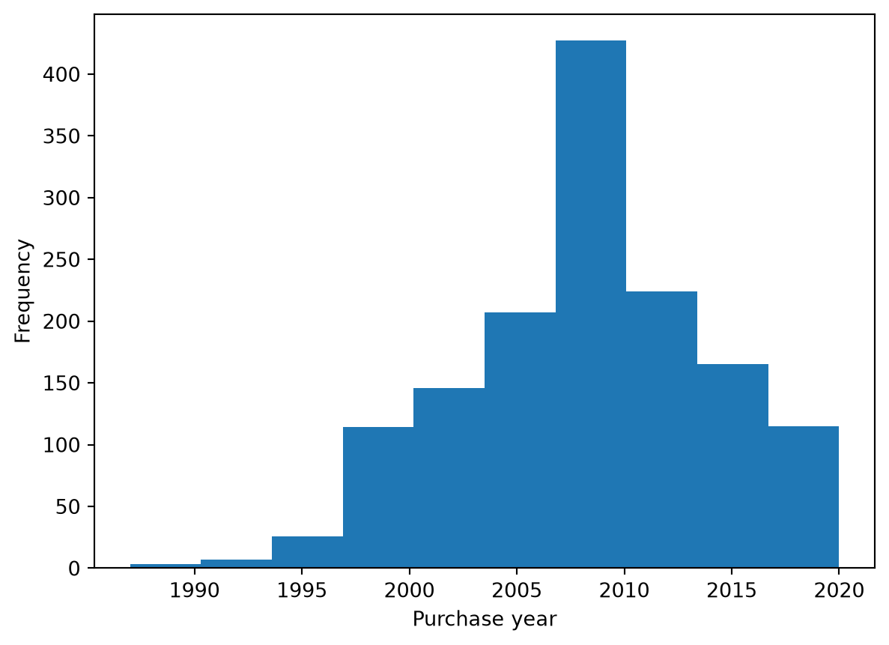
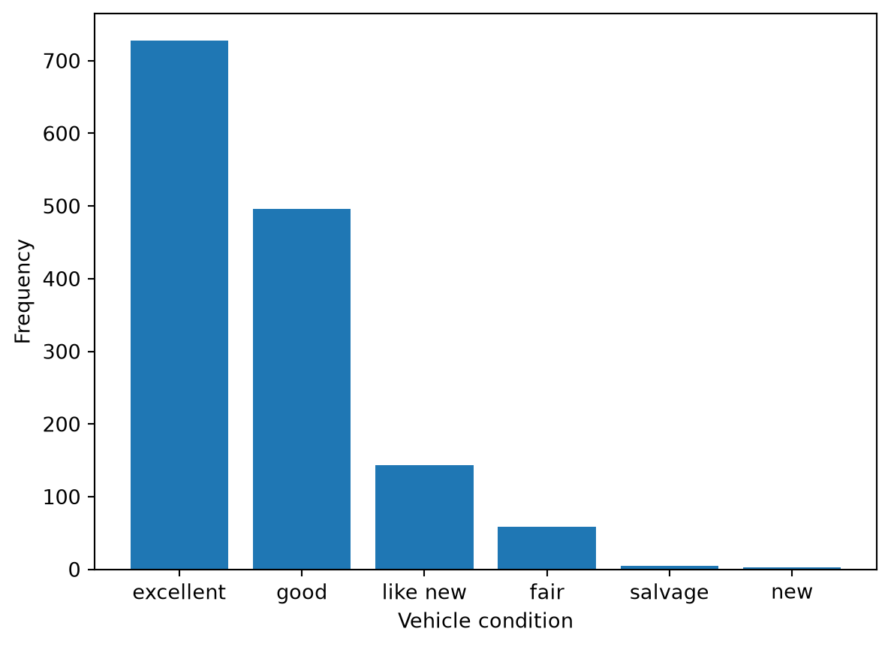
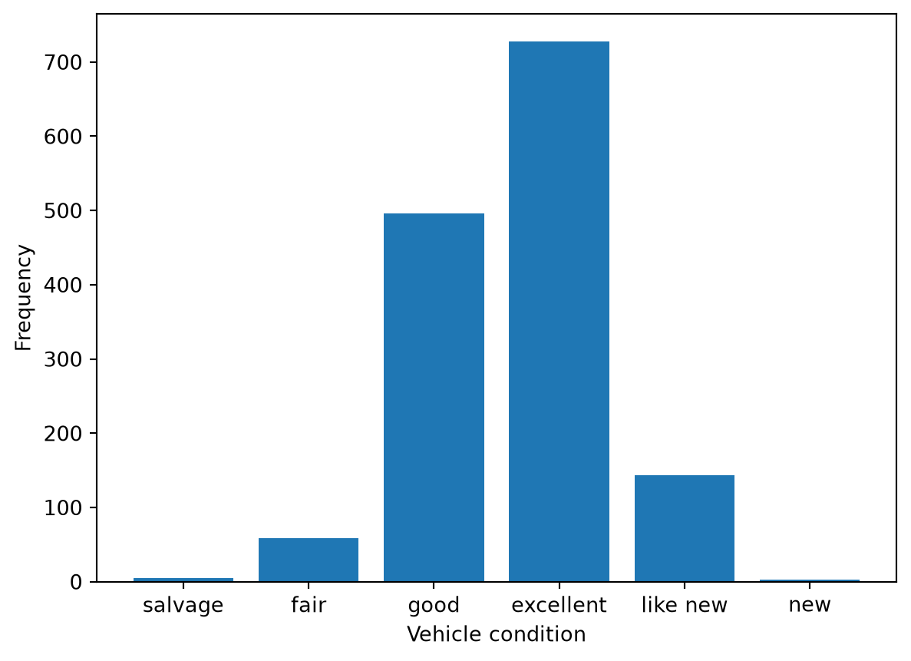
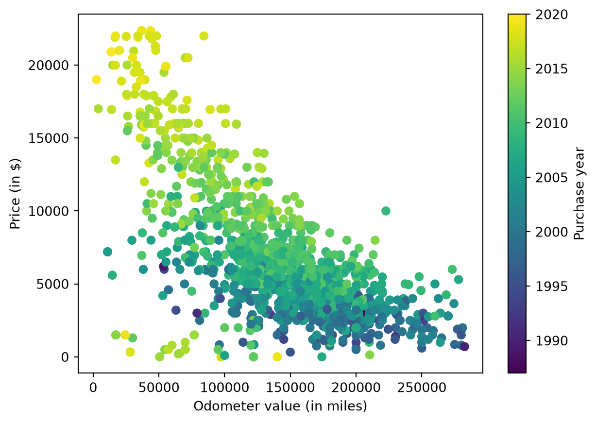
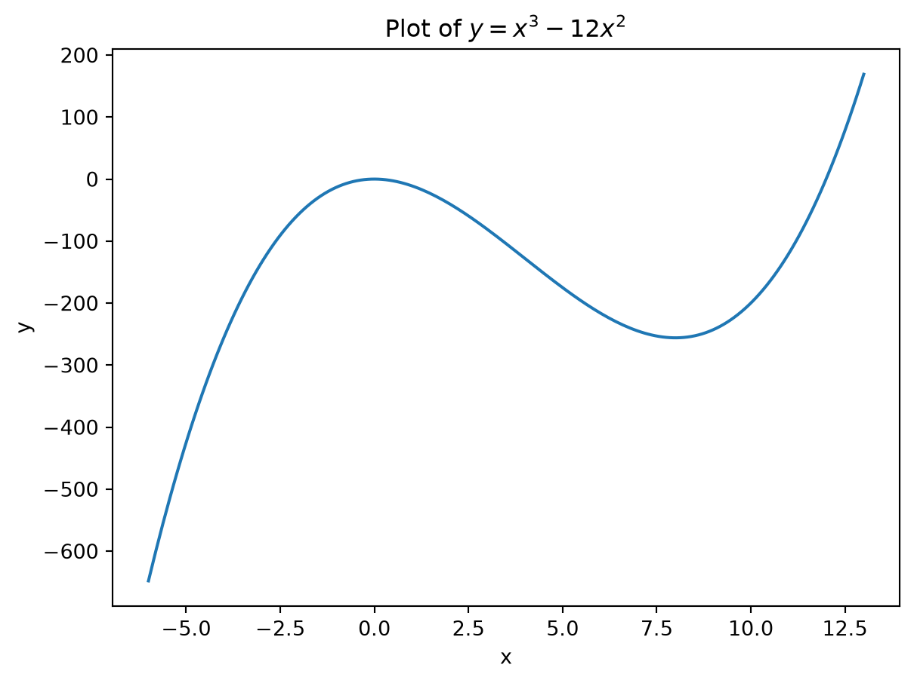

import pandas as pd
df = pd.read_csv("toyota-camry-ads.csv")Tutorial Exercises Week 6 - Solutions
Question 1
Download the dataset toyota-camry-ads.csv. This dataset contains information on classified advertisements placed on Craigslist for used Toyota Camry cars, one of the most common sedan cars in the US. The variables are:
condition: what kind of condition the car is in (good, like new, etc).odometer: how many miles the car has travelled in its lifetime (the car’s “mileage”).paint_color: the car’s color.price: the asking price of the car.year: the year the car was bought new.
Read these data into Python as df. Use it to answer the following questions:
- Create a histogram of the
yearvariable. Choose the answer below which best describes what we see in the histogram:
- The majority of cars in the dataset were bought between 2007-2009.
- The majority of cars in the dataset were bought after 2000.
- The majority of cars in the dataset were bought after 2010.
- All cars in the dataset were bought after 1990.
Answer:
import matplotlib.pyplot as plt
plt.hist(df["year"])
plt.xlabel("Purchase year")
plt.ylabel("Frequency")Text(0, 0.5, 'Frequency')
Although the peak in the distribution is in the 2007-2009 range, the majority of cars are not from then. The majority were bought after 2000, as this wide range contains the bulk of observations.
- Create a bar plot of the
conditionvariable. Based on this plot, what is the most common condition for Toyota Camry cars for sale on this site to be in?
Answer: We can create the bar plot with:
plot_data = df["condition"].value_counts()
plt.bar(plot_data.index, plot_data.values)
plt.xlabel("Vehicle condition")
plt.ylabel("Frequency")Text(0, 0.5, 'Frequency')
We see excellent is the most common value.
Suppose we wanted to have the order of the bars to be from worst to best. We can specify the order as follows:
order = ["salvage", "fair", "good", "excellent", "like new", "new"]
df["condition"] = pd.Categorical(
df["condition"],
categories=order,
ordered=True
)
plot_data = df["condition"].value_counts(sort=False)
plt.bar(plot_data.index, plot_data.values)
plt.xlabel("Vehicle condition")
plt.ylabel("Frequency")Text(0, 0.5, 'Frequency')
- Create a scatter plot with
odometeron the horizontal axis andpriceon the vertical axis. In addition, make the colors of the points represent the values of the year variable.
Choose the answer below which best interprets this scatter plot.
- Higher values of odometer are usually associated with higher prices. In addition, newer cars usually sell for a higher price.
- Higher values of odometer are usually associated with higher prices. In addition, older cars usually sell for a higher price.
- Higher values of odometer are usually associated with lower prices. In addition, newer cars usually sell for a higher price.
- Higher values of odometer are usually associated with lower prices. In addition, older cars usually sell for a higher price.
Answer:
plt.scatter(df["odometer"], df["price"], c=df["year"])
plt.xlabel("Odometer value (in miles)")
plt.ylabel("Price (in $)")
plt.colorbar(label="Purchase year")
This answer is: “Higher values of odometer are usually associated with lower prices. In addition, newer cars usually sell for a higher price.” This is because the cloud of points is downward-sloping so there is a negative relationship between odometer and price. Moreover, the brighter values (newer cars) are more concentrated at higher prices and darker values (older cars) are more concentrated at lower prices.
Question 2
Define the following function in Python:
f(x)=x^3 - 12x^2
- Plot the function in the interval [-6, 13].
Answer:
import matplotlib.pyplot as plt
import numpy as np
def f(x):
return x**3 - 12*x**2
x = np.linspace(-6, 13, 200)
y = [f(i) for i in x]
plt.plot(x, y)
plt.xlabel("x")
plt.ylabel("y")
plt.title("Plot of $y=x^3-12x^2$")Text(0.5, 1.0, 'Plot of $y=x^3-12x^2$')
- Based on the plot, what values of x are the extreme points of this function (they are whole numbers).
Answer: From the plot we can see these are at 0 and 8. Although not required to answer the question, to confirm we can maximize the function starting near 0 and minimize the function starting near 8:
from scipy.optimize import minimize
result1 = minimize(lambda x: -f(x), x0=0.1)
result2 = minimize(f, x0=7.9)
[result1['x'], result2['x']][array([1.06752097e-08]), array([7.99999996])]The result confirms what we see visually. The solution is not exactly 0 and 8 due to floating point precision.
Question 3
Use R to find the maximum of the following function:
f(x)=100 + 2x - x^2
What value of x maximizes this function? What is f(x) at its maximum?
Answer:
import matplotlib.pyplot as plt
def f(x):
return 100 + 2*x - x**2
result = minimize(lambda x: -f(x), x0=0)
result message: Optimization terminated successfully.
success: True
status: 0
fun: -100.99999999999996
x: [ 1.000e+00]
nit: 2
jac: [ 0.000e+00]
hess_inv: [[ 5.000e-01]]
nfev: 6
njev: 3The function is maximized at 1 where it takes a value 101.
Note: Be careful not to take -101 as in the Python output, as that is the value of our lambda function which flips the sign on the output of our function.